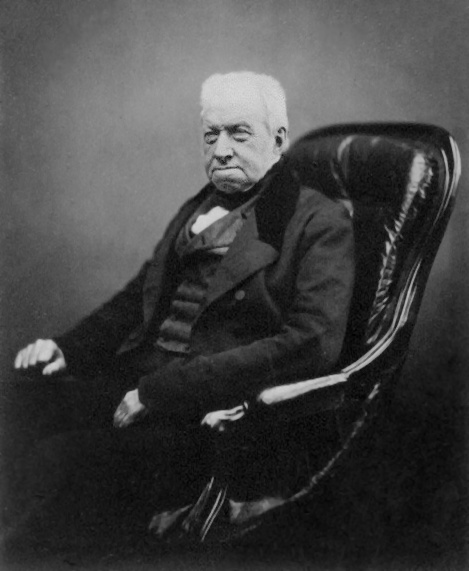
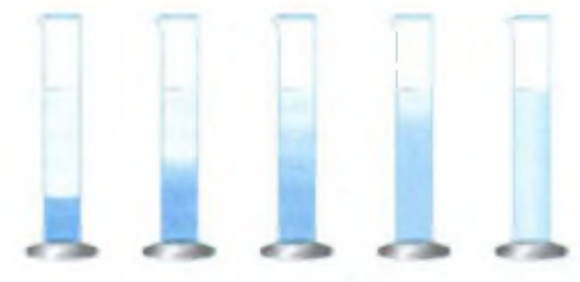
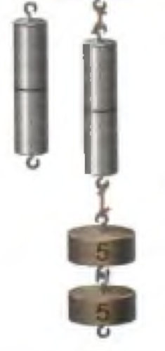
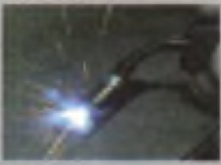
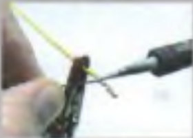
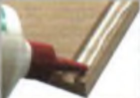
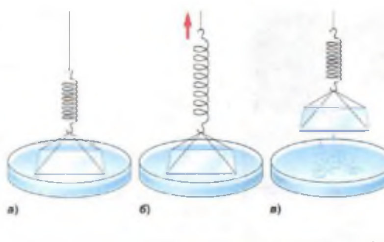

Физика, 7 класс, параграфы 9, 10 и 11. Здесь весь текст учебника, разложенный по полочкам, и живые схемы: их можно запускать, двигать ползунки и смотреть, как ведут себя молекулы. Синие рамки — определения, тёмные — главное, зелёные — пояснения простыми словами.
§ 9
Броуновское движение
Учебник, с. 25–27

Роберт Броун (1773–1858)Британский ботаник. Первооткрыватель броуновского движения.
Одно из главных опытных доказательств того, что молекулы движутся, — это явление, которое первым наблюдал в 1827 году английский ботаник Роберт Броун. Он рассматривал в микроскоп споры растений, плававшие в жидкости.
1Что увидел Броун
Похожий опыт можно сделать и самим. Берут краску или тушь и растирают её до таких мельчайших крупинок, что их видно только в микроскоп. Краску размешивают в воде и рассматривают эту смесь в микроскоп.
Видно, что крупинки краски непрерывно движутся:
самые мелкие беспорядочно (хаотически) перемещаются с одного места в другое;
более крупные только беспорядочно колеблются, «дрожат» на месте.
Точно так же, только споры растений в жидкости, двигались и у Броуна.
Движение очень мелких твёрдых частиц, находящихся в жидкости, называют броуновским движением, а саму частицу — броуновской частицей.
Живая схема: смотрим «в микроскоп»
Три крупинки краски разного размера в воде. Молекулы воды обычно не видны, но их можно показать галочкой.
холодно горячо
2Броуновское движение никогда не прекращается
Наблюдения показывают, что броуновское движение не прекращается никогда. В капле воды (если не дать ей высохнуть) движение крупинок можно наблюдать много дней, месяцев, лет. Оно не останавливается ни летом, ни зимой, ни днём, ни ночью.
В кусках кварца, которые пролежали в земле тысячи лет, иногда попадаются замурованные капельки воды. В этих капельках тоже наблюдали броуновское движение плавающих в воде частиц.
3Почему крупинки движутся
Причина броуновского движения — непрерывное, никогда не прекращающееся движение молекул жидкости (или газа), в которой находятся крупинки твёрдого тела.
Крупинки во много раз крупнее самих молекул. Когда мы видим в микроскоп движение крупинок, мы видим не молекулы. Молекулы нельзя увидеть в обычный микроскоп. О том, что они существуют и движутся, мы судим по их ударам: молекулы толкают крупинки краски и заставляют их двигаться.
Можно привести такое сравнение. Группа людей играет на воде огромным мячом. Они толкают мяч, и от толчков он движется то в одну, то в другую сторону. Если смотреть на игру издали, людей не видно, и кажется, что мяч движется беспорядочно и сам по себе, без причины.
Мяч — как крупинка краски, люди — как молекулы воды
Так же и мы не видим самих молекул, но понимаем: непрерывное и беспорядочное движение крупинок краски происходит из-за толчков молекул.
Мелкую крупинку молекулы со всех сторон бьют неодинаково: то с одной стороны ударов больше, то с другой. Поэтому её и бросает туда-сюда. Большую крупинку бьёт столько молекул сразу, что удары почти уравновешивают друг друга, и она только слегка дрожит.
4Что доказало открытие Броуна
Открытие броуновского движения имело большое значение для изучения строения вещества.
Броуновское движение показало, что тела действительно состоят из отдельных частиц — молекул, и что молекулы находятся в непрерывном беспорядочном движении.
§ 10
Диффузия в газах, жидкостях и твёрдых телах
Учебник, с. 27–29
1Диффузия в газах: почему запах разносится по комнате
Всем хорошо известно: если внести в комнату какое-нибудь пахучее вещество, например духи или кофе, запах скоро будет чувствоваться во всей комнате.
Запахи распространяются потому, что молекулы духов (или кофе) движутся. По пути они сталкиваются с молекулами газов, из которых состоит воздух. Молекулы постоянно меняют направление движения и, беспорядочно перемещаясь, разлетаются по комнате.
Живая схема: запах из аромалампы
Оранжевые точки — молекулы ароматного масла, серые — молекулы воздуха. Следи за одной молекулой, выделенной красным: её путь — ломаная линия.
Нажми «Открыть аромалампу».
Распространение запаха — доказательство непрерывного и беспорядочного движения молекул.
2Диффузия в жидкостях: опыт с медным купоросом
Проделаем опыт, который можно объяснить только тем, что тела состоят из молекул, находящихся в непрерывном движении.
Нальём в мензурку (или стакан) раствор медного купороса — он тёмно-голубого цвета. Сверху осторожно добавим чистую воду (рис. 23).

Рис. 23. Диффузия в жидкостях: слева направо проходят дни и недели
Сначала между водой и медным купоросом видна резкая граница.
Через несколько дней граница становится слегка размытой.
Через 2–3 недели граница, отделяющая одну жидкость от другой, исчезает. В сосуде получается однородная жидкость бледно-голубого цвета. Значит, жидкости перемешались.
Объясняется это так. Молекулы воды и медного купороса, которые находились возле границы двух жидкостей, поменялись местами (рис. 24). Граница стала расплывчатой: молекулы медного купороса оказались в нижнем слое воды, а молекулы воды — в верхнем слое медного купороса. Постепенно молекулы медного купороса и воды, двигаясь непрерывно и беспорядочно, распространяются по всему объёму, и жидкость в сосуде становится однородной.
Живая схема: рис. 24 в движении
Голубые шарики — молекулы медного купороса, белые — молекулы воды. Справа — как это видно глазом: цвет жидкости на разной высоте.
холодная тёплая
резкая границаграница размытаоднородная жидкость
Явление, при котором происходит взаимное проникновение молекул одного вещества между молекулами другого, называют диффузией.
3Диффузия в твёрдых телах
В твёрдых телах диффузия тоже происходит, но ещё медленнее.
Например, очень гладко отшлифованные пластинки свинца и золота кладут одну на другую и ставят на них груз. При комнатной температуре (20 °С) за 4–5 лет золото и свинец взаимно проникают друг в друга на глубину около 1 мм (рис. 25).
В этих опытах мы наблюдаем взаимное проникновение молекул веществ, то есть диффузию.
Газзапах духов разносится по комнате быстро
Жидкостькупорос и вода — за 2–3 недели
Твёрдое телосвинец и золото — 1 мм за 4–5 лет
Выводбыстрее всего диффузия идёт в газах, медленнее всего — в твёрдых телах
4Диффузия и температура
Чем выше температура, тем быстрее идёт диффузия. Так происходит потому, что при повышении температуры увеличивается скорость движения молекул. Проверь это на живых схемах выше: передвинь ползунок к «тёплая» — и жидкости перемешаются заметно быстрее.
Диффузия ускоряется с повышением температуры, потому что молекулы начинают двигаться быстрее.
5Диффузия в природе
Диффузия играет большую роль в природе. Например:
благодаря диффузии у поверхности Земли поддерживается однородный состав воздуха;
диффузия растворов разных солей в почве помогает нормальному питанию растений.
§ 11
Взаимное притяжение и отталкивание молекул
Учебник, с. 30–32
1Почему тела не рассыпаются на молекулы
Если все тела состоят из мельчайших частиц (молекул или атомов), почему твёрдые тела и жидкости не рассыпаются на отдельные молекулы? Что удерживает их вместе — ведь молекулы разделены промежутками и находятся в непрерывном беспорядочном движении?
Дело в том, что между молекулами существует взаимное притяжение. Каждая молекула притягивает к себе все соседние молекулы и сама притягивается ими.
Когда мы рвём нить, ломаем палку или отрываем кусочек бумаги, мы преодолеваем силы притяжения между молекулами.
Притяжение между двумя отдельными молекулами заметить совершенно невозможно. Но когда притягиваются многие миллионы таких частиц, взаимное притяжение становится значительным. Поэтому верёвку или стальную проволоку так трудно разорвать руками.
Притяжение между молекулами в разных веществах неодинаково. Этим объясняется разная прочность тел. Например, стальная проволока прочнее медной. Это значит, что частицы стали притягиваются друг к другу сильнее, чем частицы меди.
2Притяжение заметно только вблизи
Притяжение между молекулами становится заметным, только когда они находятся очень близко друг к другу. На расстоянии больше размеров самих молекул притяжение ослабевает.
Две капли воды сливаются в одну, если они соприкоснутся.
Два свинцовых цилиндра сцепляются вместе, если их плотно прижать друг к другу ровными, только что срезанными поверхностями. Сцепление может быть таким прочным, что цилиндры не удаётся оторвать друг от друга даже при большой нагрузке (рис. 26).

Рис. 26. Сцепление свинцовых цилиндров: они держат даже гирю
Однако осколки стекла нельзя срастить, даже если плотно прижимать их друг к другу. Из-за неровностей их не удаётся сблизить на то расстояние, на котором частицы могут притянуться. Но если размягчить стекло, нагрев его, то части можно сблизить, и стекло в этом случае спаивается. Значит, частицы стекла оказались на таком расстоянии, когда действует притяжение.
Живая схема: два осколка стекла под «микроскопом»
Края осколков неровные. Прижми их или нагрей и посмотри, где молекулы оказываются достаточно близко.
Осколки лежат рядом, но не касаются.
На притяжении молекул друг к другу основано соединение кусков металла при сварке или пайке, а также склеивание.

а) сварка

б) пайка

в) склеивание
Между молекулами (атомами) существует взаимное притяжение, которое заметно только на расстояниях, сравнимых с размерами самих молекул (атомов).
3Почему молекулы не слипаются: отталкивание
Попробуем выяснить, почему между молекулами есть промежутки. Если молекулы притягиваются друг к другу, они как будто должны слипнуться. Этого не происходит потому, что между молекулами (атомами) в то же время существует отталкивание.
На расстояниях, сравнимых с размерами самих молекул (атомов), заметнее проявляется притяжение, а при дальнейшем сближении — отталкивание.
Живая схема: подвигай молекулы
Тяни ползунок и смотри, как меняется взаимодействие двух молекул.
вплотную далеко
отталкиваниепритяжениепочти не действуют
Многие явления подтверждают, что отталкивание между молекулами существует. Например, сжатое тело распрямляется. Это происходит потому, что при сжатии молекулы оказываются так близко друг к другу, что начинает проявляться отталкивание.
Молекулы похожи на людей в очереди, которые держатся за руки. Если отойти слишком далеко — руки тянут обратно (притяжение). Если толкнуть их вплотную — они упираются локтями и расталкивают друг друга (отталкивание).
4Смачивание
Некоторые явления в природе можно объяснить притяжением молекул друг к другу. Например, смачивание твёрдого тела жидкостью.
К пружине подвешивают на нитке стеклянную пластинку так, чтобы её нижняя поверхность была горизонтальной (рис. 27). Пластинку подносят к сосуду с водой так, чтобы она легла на поверхность воды.

Рис. 27. Явление смачивания тел
Живая схема: отрываем пластинку от воды
Тяни ползунок вверх (вправо) и смотри на пружину.
пластинка лежит оторвали
а) Пластинка лежит на воде.
б) Когда пластинку отрывают от воды, пружина заметно растягивается. Это доказывает, что между молекулами есть притяжение. По тому, насколько растянулась пружина, можно судить, насколько оно велико.
в) Если посмотреть на оторванную пластинку, на ней остаётся тонкий слой воды — пластинка смочена водой.
Значит, отрывая пластинку, мы преодолевали притяжение между молекулами воды. Разрыв произошёл не там, где молекулы воды касаются частиц стекла, а там, где молекулы воды касаются друг друга.
Вода смачивает не только стекло, но и кожу, дерево и другие вещества.
Но во многих случаях вода может и не смачивать тела. Например, если опустить в воду кусочек воска или парафина, а потом вынуть, он окажется сухим. И ты хорошо знаешь, что вода не смачивает жирные поверхности.
Схема: капля на разных поверхностях
Все эти примеры легко объяснить.
Жидкость смачивает телоМолекулы жидкости притягиваются друг к другу слабее, чем к молекулам тела.
Жидкость не смачивает тело (несмачиваемость)Молекулы жидкости притягиваются друг к другу сильнее, чем к молекулам твёрдого тела.
В быту мы часто встречаемся со смачиванием и несмачиванием. Например, благодаря смачиванию мы можем писать (чернила смачивают бумагу) и вытирать мокрые предметы. А у водоплавающих птиц перья остаются сухими: вода их не смачивает.